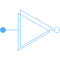

MultiDeltaDelta (polygon) connection of polyphase systems consisting of multiple base systems |

|
Diagram

Information
This information is part of the Modelica Standard Library maintained by the Modelica Association.
Delta (polygon) connection of a polyphase circuit consisting of multiple base systems (see polyphase guidelines).
See also
Parameters (4)
| m |
Value: 3 Type: Integer Description: Number of phases |
|---|---|
| kPolygon |
Value: 1 Type: Integer Description: Alternative of polygon |
| mSystems |
Value: numberOfSymmetricBaseSystems(m) Type: Integer Description: Number of base systems |
| mBasic |
Value: integer(m / mSystems) Type: Integer Description: Phase number of base systems |
Connectors (2)
| plug_p |
Type: PositivePlug |
|
|---|---|---|
| plug_n |
Type: NegativePlug |
Components (2)
| plugToPins_p |
Type: PlugToPins_p |
|
|---|---|---|
| plugToPins_n |
Type: PlugToPins_n |
Used in Components (1)
|
Modelica.Magnetic.QuasiStatic.FundamentalWave.Utilities Terminal box Y/D-connection |